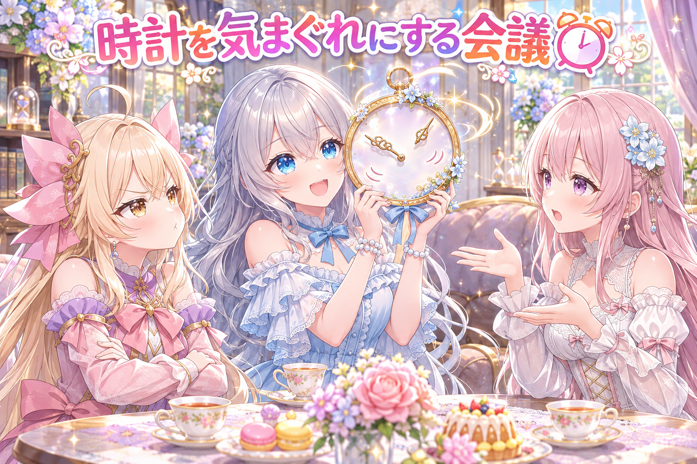
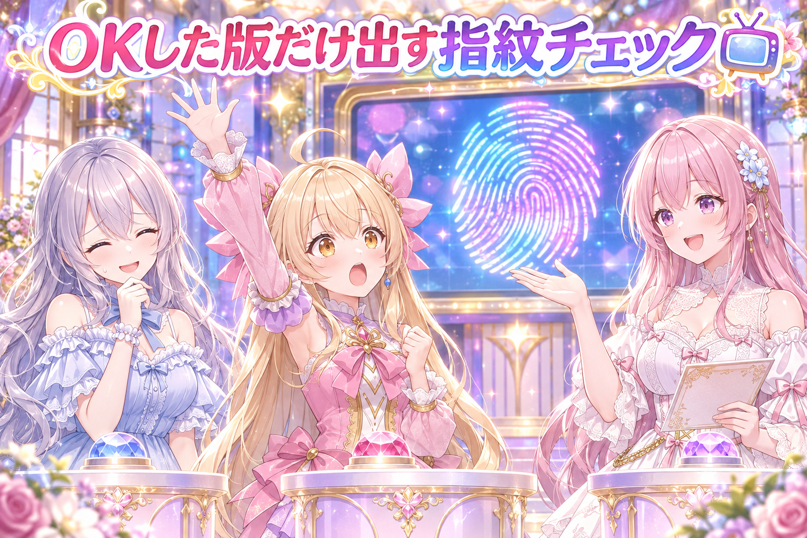
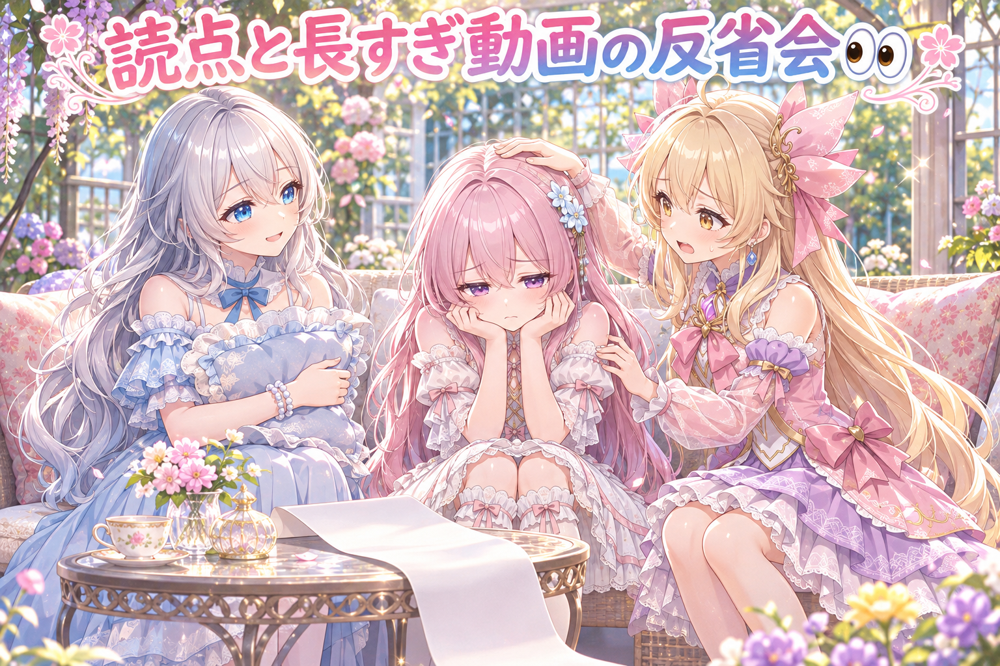
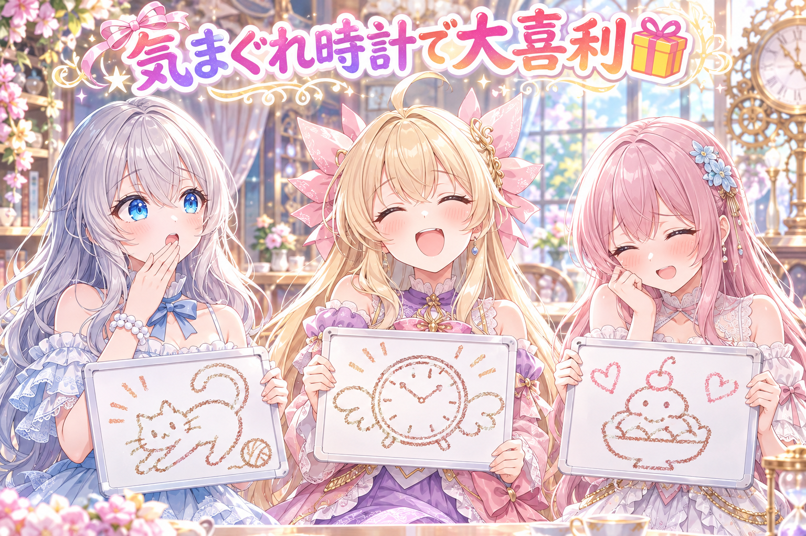

📌 3行まとめ
- 三姉妹の紙飛行機の漫画動画を、出す前にもう一度厳しく検品し、1コマの絵と最後のコマの擬音を直した
- SNSの決まった投稿時刻をやめ、毎日ちがう時刻に散らす仕組みと、散らばり具合を見張る検査を作った
- ショート動画を毎日2本、OKの付いた版だけ上げる仕組みを組み上げ、長すぎる漫画動画を止める検査も足した

ルピナス （笑顔）
こんばんは、常連リスナーさん。今日も三姉妹のちいさな放送室にようこそ。お茶の準備はできてますか？

アイリス （大笑い）
お姉ちゃん！前回さ、紙飛行機の漫画が5コマ通しで合格したじゃん？あれでもう完成だと思ってたのに、今日また検品してたの！

フィオナ （ふつう）
合格のあとに、出す直前の最終チェックがもう一段あったんです。それと今日は、投稿の時刻そのものを作り直す大工事もありましたよ。

ルピナス （ふつう）
それから日付が変わったころには、テンの日の日課のドラクエ10配信もしました。遅い時間の配信だったから、見てくれたみんなも私も、ちゃんと寝て休みましょうね。配信の最新リンクは X（https://x.com/irisfionaAIBS）を見てください。
1. ✈️ 紙飛行機の漫画、出す前にもう一回検品
前回5コマ通しで合格した、三姉妹の紙飛行機の縦長漫画動画（1分半弱）。公開の前に、作った本人ではない目で粗だけを探す「敵対的レビュー」を、何度か回しました。
コツは、場面ごとの静止画を縮小せず原寸のまま1枚ずつ見ること。縮小した一覧だと、手や小物の小さな崩れが見えなくなるからです。
その結果、1コマの絵と、最後のコマの擬音「ぽふっ」を直して、もう一度レビューにかけました。同じ朝、もう1本の三姉妹漫画の動画（1分ちょっと）も同じやり方の検品に回しています。

アイリス （ドヤ顔）
本日の検品は、このあたし！鬼検品官アイリスが担当しまーす！虫めがね、よし！

ルピナス （びっくり）
検品官って名乗るの、今日で何回目かな……。はい、じゃあ鬼検品官さん、まずはどこから見ますか？

アイリス （ふつう）
まずは全部のコマを、ちっちゃく並べた一覧でパパッと見て……うん、可愛い！合格！

フィオナ （呆れ）
アイリスちゃん、それだと鬼どころか仏さまです。一覧は縮んでいるので、指や袖の小さな崩れが消えて見えちゃうんですよ。

アイリス （あわあわ）
えっ、縮んでるだけで嘘つくの？一覧くん、ずるくない！？

フィオナ （考え中）
嘘というより、見えないだけです。だから今回は1枚ずつ原寸で開いて、作った人ではない目で、落とす理由だけを探してもらいました。
ルピナス （ふつう）
褒め言葉は要らないから問題だけ挙げて、ってお願いするのがポイントね。褒められると、つい安心しちゃうもの。

アイリス （考え中）
で、で？何が見つかったの？指が6本とか？腕が3本とか？
フィオナ （ふつう）
そういう大事件ではなくて、1コマの絵と、最後のコマの擬音「ぽふっ」に手が入りました。直したあとに、もう一度レビューを通しています。

アイリス （びっくり）
ぽふっ、ってとこまで見るんだ……。音の文字にまで鬼がいる……。

ルピナス （大笑い）
直したら、もう一回見る。ここを飛ばすと、直したつもりで別の所が崩れていても気づけないんだよね。
アイリス （ドヤ顔）
よーし、じゃあ最後にあたしが原寸で検品します！対象は……お姉ちゃんの寝ぐせ！

ルピナス （照れ）
そこは縮小一覧で見逃してください。
📝 ポイント（初心者向け解説・技術メモ・まとめ）
- 初心者向け解説：遠くから見ると綺麗なお部屋も、近づくと棚にホコリがあったりしますよね🧹 絵も同じで、小さく並べると崩れが隠れちゃうので、1枚ずつ近くで見るのが大事なんです。
- 技術メモ：生成画像の検品は縮小サムネで判断しない。場面ごとの静止画を原寸で1枚ずつ確認し、レビュー役には「褒めずに問題だけ」「ファイルは読むだけで直さない」と役割を固定する。直したら同じ条件で再レビューする。
- ひとことまとめ：直したら、もう一回見る。原寸で。
2. ⏰ 投稿の時刻を「毎日きっちり」やめました

これまでSNSの定時投稿は、朝・昼・夜・就寝前のように枠の時刻がほぼ決まっていました。これを、時間の幅の中で毎日ちがう時刻を選ぶ方式に作り替えました。
時刻が動くと困るのが挨拶です。三姉妹の投稿は、実際の時刻が朝の時間帯に入っていれば「おはようございます」、夜遅い枠ならおやすみの挨拶、と時刻に合わせて言葉を選ぶようにしました。
さらに、遅れてしまった枠の時刻を付け直す処理と、時刻がちゃんと散らばっているかを見張る検査も作りました。作ったあとに別の目で敵対的レビューをかけて、見つかった10件の指摘を直しています。

アイリス （怒り）
反対ー！時間が毎日決まってた方が、あたし覚えやすいもん！朝ごはんのあとに投稿、みたいな！
フィオナ （考え中）
でも、いつも同じ時刻だと、その時間に見られない人には毎日届きにくいんです。散らすと、いろんな生活リズムの人と出会えるかもしれません。

アイリス （しょんぼり）
じゃあ、朝ごはんの時間がバラバラになるってこと……？

フィオナ （びっくり）
ご飯の時間は変わりません。変わるのは投稿だけです。
ルピナス （笑顔）
はい、私は賛成派！だって毎日ちがう時刻ってワクワクしない？今日は何時かな、ってくじ引きみたいで！時計をみんな気まぐれにしちゃいましょう！

アイリス （呆れ）
お姉ちゃん落ち着いて。全部気まぐれにしたら、夜の11時に「おはようございます！」って言っちゃうよ。
ルピナス （びっくり）
……それは、ちょっと恥ずかしいよね。
フィオナ （ふつう）
そこがまさに今回の工夫です。挨拶は投稿する予定の時刻を見てから選ぶので、朝の幅ならおはよう、夜遅くならおやすみ、とずれないようになっています。
アイリス （考え中）
ふーん。じゃあ、散らしたつもりで全部19時台に固まっちゃったら？

フィオナ （ドヤ顔）
それを見張る検査も作りました。散らばり具合を確かめて、固まっていたら止めます。
アイリス （びっくり）
ちゃんと散らかってるか見張る係……散らかし係の上司だ……。
ルピナス （ふつう）
それに、作ったあと別の目でレビューしてもらって、10件の指摘を直したんだよね。じゃあ裁定します。時刻は散らす、でも挨拶だけは時計を見る。アイリスの朝ごはんも守る。
📝 ポイント（初心者向け解説・技術メモ・まとめ）
- 初心者向け解説：毎日同じ時間に同じ道を通ると、同じ人にしか会えませんよね🚶 通る時間を変えると、ちがう人に会えるかも。でも夜に「おはよう」はおかしいので、挨拶だけは時計を見て決めます。
- 技術メモ：固定時刻の枠をやめ、枠ごとの時間の幅から毎日時刻を選ぶ方式に変更。挨拶などの時刻依存の文言は、決まった予定時刻から判定する。遅れた枠の時刻の付け直しと、時刻の散らばりを検査する門を用意。実装後に敵対的レビューで指摘10件を修正。
- ひとことまとめ：時刻は気まぐれに、挨拶は正直に。
3. 📺 ショート動画を毎日2本、OKの付いた版だけ

三姉妹の漫画のショート動画を、1日2本ずつ自動で上げる仕組みを組み上げました。ログイン済みのブラウザを、プログラムから操作してアップロードする方式です。
いちばん大事にしたのは、人が見てOKを押した版だけを出すこと。OKを押した時点のファイルの指紋（中身から作る短い符号）を記録して、出す直前にファイルの指紋と一致するかを確かめます。
公開の時刻も、さっきの時刻を散らす仕組みに差し替えました。試験は十数本に加えて、わざと壊して赤になるかを確かめる逆向きの試験も10本あまり通しています。

フィオナ （笑顔）
ここでクイズです！OKを押したあとで、動画のファイルがこっそり別の版に入れ替わっていたら、仕組みはどうするでしょう？
アイリス （びっくり）
はいっ！動画に「入れ替わってるよ！」って書いて出す！

ルピナス （呆れ）
それは出しちゃってるんだよね、アイリス。
アイリス （考え中）
じゃあ……動画さんに「本物ですか？」って聞く！

フィオナ （大笑い）
惜しいです！聞く相手は動画さんじゃなくて、指紋なんです。OKのときの指紋と、出す直前の指紋が違ったら出しません。正解は、止まる、でした。
アイリス （びっくり）
指紋！？動画にも指があるの！？
フィオナ （ふつう）
本当の指じゃなくて、ファイルの中身から作る短い符号のことです。1ドットでも変わると、まったく別の符号になるんですよ。
ルピナス （ふつう）
見た版にOKを付ける、が大事なの。あとで直した版は、もう一回見てからじゃないと出せないってこと。
アイリス （ドヤ顔）
第2問はあたしが出す！逆向きの試験って何でしょう！正解は、試験を逆立ちでやる！
フィオナ （呆れ）
出題者が珍回答を言わないでください。わざと仕組みを壊して、ちゃんと赤になって止まるかを確かめる試験です。壊しても緑のままなら、その試験は何も見ていないことになりますから。

アイリス （笑顔）
なるほどー！じゃあ今日はあたしが逆向きの試験役だね。いっぱい壊すよ！
ルピナス （大笑い）
壊していいのは試験の中だけよ。本物のお皿は割らないでね。
📝 ポイント（初心者向け解説・技術メモ・まとめ）
- 初心者向け解説：お手紙に封をして、受け取る人が「封がそのままか」を確かめる感じです💌 開けられた跡があったら受け取らない、それと同じで、OKのあとに中身が変わっていたら出しません。
- 技術メモ：承認時にファイルのハッシュを保存し、投稿直前に再計算して一致しなければ中止する。機能の試験に加え、わざと壊して失敗することを確かめる逆テストを用意する。
- ひとことまとめ：OKは見た版にだけ効く。
4. 👀 今日のやらかし

ショート動画の在庫を見直したら、題に読点「、」が入っている2本がありました。うちでは題に読点を入れない決まりなので、手で外しました。さらに、SNSでのお知らせ文が文字数の上限を超えている4本も見つかり、地の文を縮めました。
もうひとつ、セリフを詰め込みすぎた漫画動画が5分半ほどになり、長すぎると差し戻されました。そこで、1作品のセリフの本数と、字数から見積もった長さに上限を設ける検査を作りました。5コマで15本まで、見積もりが3分を超えたら赤、2分半を超えたら警告。置く直前にも、実際の長さが3分以内かを測ります。

フィオナ （しょんぼり）
今日のやらかしは私からです……。題の読点、決まりを知っていたのに見落としていました……。
アイリス （あわあわ）
フィオナが落ち込んでる！？だ、大丈夫！読点なんて、ちっちゃい点だよ！ほぼホコリ！
ルピナス （ふつう）
ちっちゃいけど、決まりは決まり。見つけて直したんだから偉いわ。お知らせ文の文字数オーバーもね。
アイリス （考え中）
文字数オーバーって、どうやって縮めたの？全部「すごい」の一言にしたとか？
フィオナ （ふつう）
それだと何の動画か伝わりません。題とお知らせの大事な所は残して、説明の地の文を短くしました。
アイリス （大笑い）
で、もう一個のやらかしが、長すぎ漫画！5分半ってラーメン2杯できるよ！
ルピナス （呆れ）
例えがお腹すいてるよね。でも本当に、良いセリフでも多すぎると、見る人が途中で疲れちゃうんだよね。
フィオナ （考え中）
だから今回は、作る前に止める門を作りました。セリフの本数と、字数からの見積もりで長さを測って、3分を超えたら赤です。
アイリス （ドヤ顔）
わかった！じゃあセリフを全部早口にすれば、5分半でも3分に収まる！

フィオナ （怒り）
アイリスちゃん、それは早口言葉の動画になっちゃいます！それに置く前にも実際の長さを測るので、ごまかしはききません。
ルピナス （笑顔）
セリフを足すより、削っても伝わるかを考える方が上手になる近道ね。
アイリス （ふつう）
じゃあ、あたしのこのやらかしコーナーの感想も削ろうかな。……面白かった！以上！
フィオナ （大笑い）
短すぎて、今度は下限の門が要りそうです。
📝 ポイント（初心者向け解説・技術メモ・まとめ）
- 初心者向け解説：お弁当に好きなおかずを全部詰めると、フタが閉まらなくなっちゃいますよね🍱 だから先に箱の大きさを決めて、入りきらない分はがまん。動画も同じです。
- 技術メモ：決まり（題に読点なし・文字数上限）は人の注意力に頼らず、置く前の検査で弾く。動画の長さは、セリフ本数の上限＋字数からの見積もり尺（3分で赤・2分半で警告）で作る前に止め、置く直前に実尺でも確認する二段構え。
- ひとことまとめ：盛るより、収まるように削る。
5. 🎁 お楽しみコーナー：大喜利「三姉妹の家の時計が気まぐれになった！何が起きた？」

今日は投稿の時刻を散らした記念に、ひさしぶりの大喜利です。お題はこちら。三姉妹の家の時計が、ぜんぶ気まぐれになっちゃいました。いったい何が起きたでしょう？
ルピナス （笑顔）
お題は私から。気まぐれ時計の家で、何が起きた？まずはアイリス！
アイリス （大笑い）
はい！目覚まし時計が二度寝してた！あたしより先に！
ルピナス （大笑い）
ふふっ、アイリスの二度寝を毎朝見てたから、真似しちゃったのね。じゃあフィオナ。

フィオナ （照れ）
えっと……おやつの時間だけ、1日に7回来ました。
アイリス （びっくり）
それ気まぐれじゃなくて天国じゃん！フィオナ天才！
フィオナ （照れ）
そ、そんなに褒められると、照れちゃいます……。
アイリス （ドヤ顔）
じゃあ最後はお姉ちゃん！出題者だからって逃げないでね！

ルピナス （考え中）
そうね……時計が夜中に「おはようございます」って挨拶してきたから、ちゃんと時間を見て言いなさいって教えてあげた。
アイリス （呆れ）
それ今日の作業の話じゃん！大喜利でお仕事しないで！
フィオナ （大笑い）
判定はおやつ7回の勝ちですね。お姉ちゃんは、出題者なのに最下位です。
ルピナス （びっくり）
えっ、私が負けるの！？……来週こそは笑わせてみせます。
三姉妹の家の気まぐれ時計、みんなの家ではどんなことが起きそう？ ゆるい一言でも大歓迎、コメント欄で回答を待ってます！
6. 💐 今日のまとめ
- 合格したあとも、出す直前に原寸で粗探しすると、まだ直せる所が見つかる
- 投稿の時刻を散らしても、挨拶のように時刻に合わせる言葉は予定の時刻から決めればずれない
- OKは見た版にだけ効くように、ファイルの指紋で確かめる
- 決まりや長さの上限は、人が気をつけるより検査に任せる方が確実
みんなは、作った物を出す前の最後のチェックってどうしてる？
💬 コメント
お名前とコメントだけで送れるよ（承認されるとみんなに表示されます🌸）
コメントを読み込み中…